Github
1.En primer lugar, necesitaremos la extensión de GitHub Pull Request, que servirá de intermediario entre la web y el VS.

2.Una vez instalada la extensión se inicia sesión para tener vinculado tu cuenta de GitHub

3.Una vez tengamos todo iniciado, en este caso abriremos cualquier repositorio con nuestro Visual desde los repositorios

4.Elegimos el repositorio y se abrirá

5.Para guardar cualquier modificación realizada, guardaremos (Control + S) y acto seguido nos dirigimos al control de código fuente

6.Importante poner en el control de código fuente “commit” para que se guarden los cambios

7.Vamos a GitHub y observamos que todo está correcto, con los cambios guardados

8.Aparte, en el logo de GitHub podemos configurar Pull Requests y tambien Issues

Git
Antes de poder usar github etc, es obligatorio descargar git .
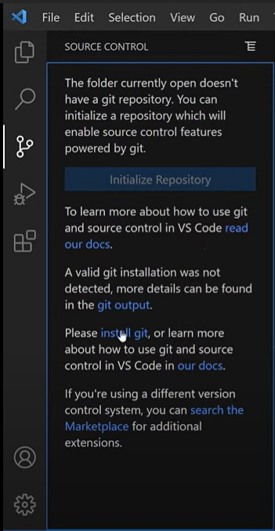Nos dira el VsCode que tendremos que instalar git para iniciar esta parte
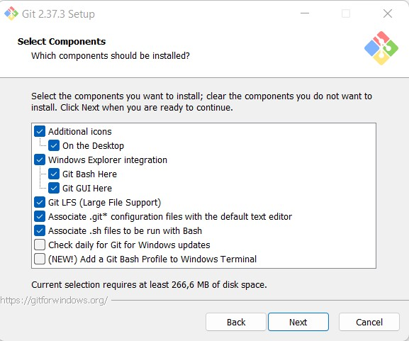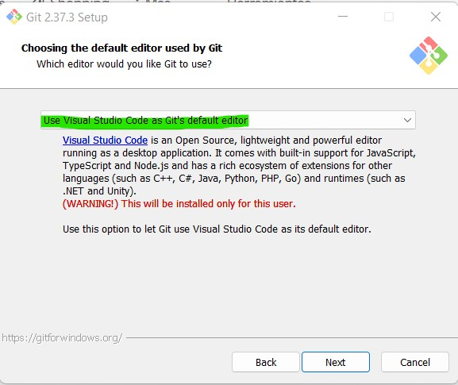
Elegimos vscode como editor default
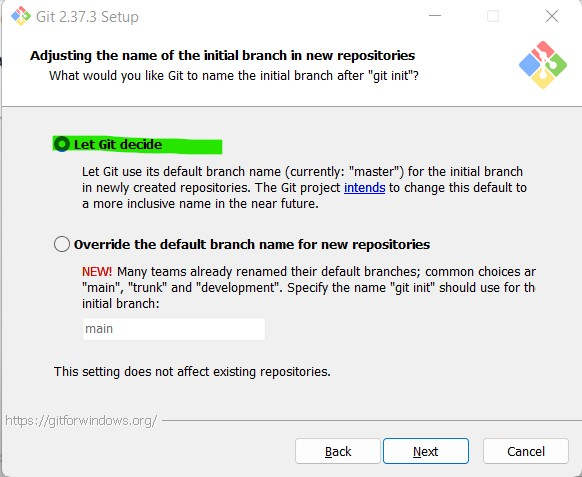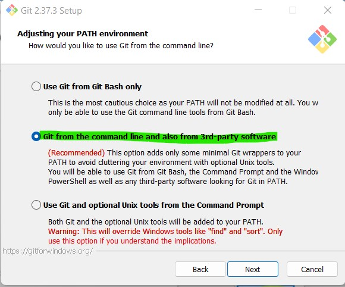 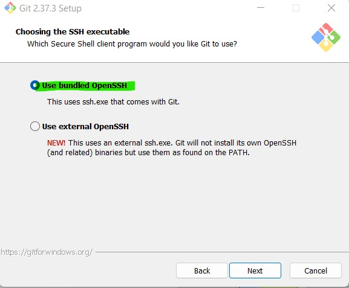 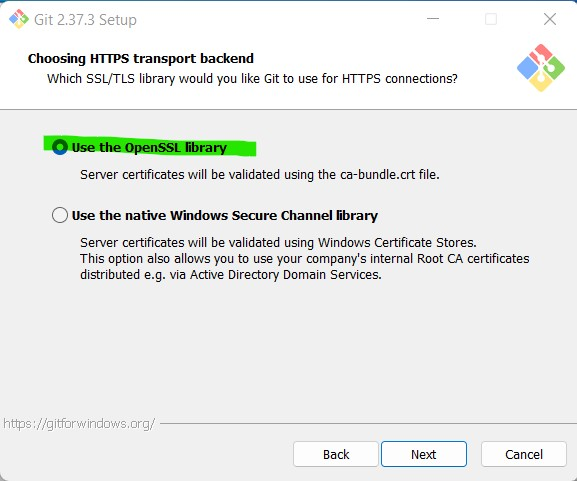 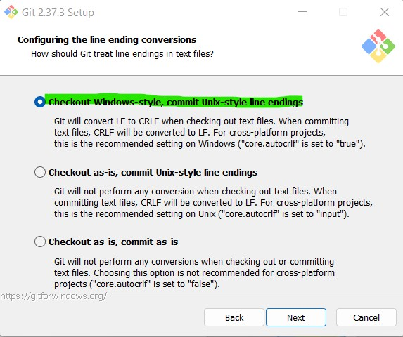 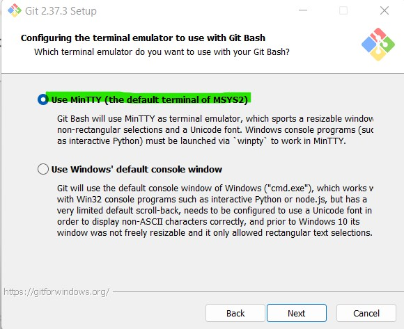 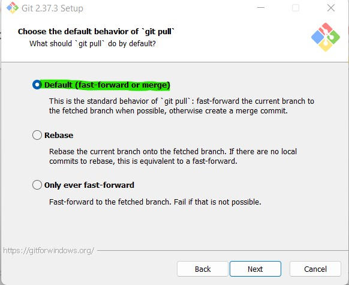 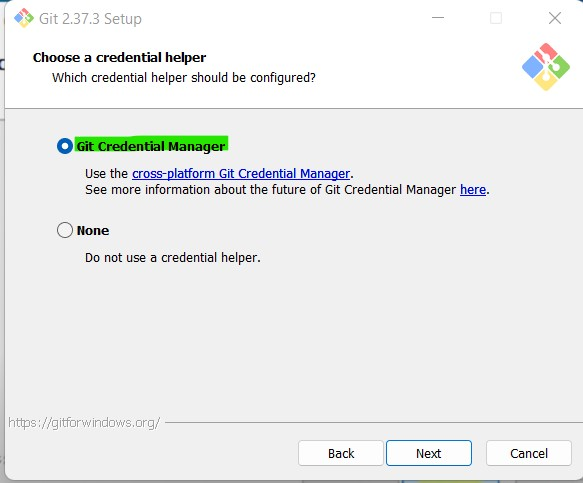 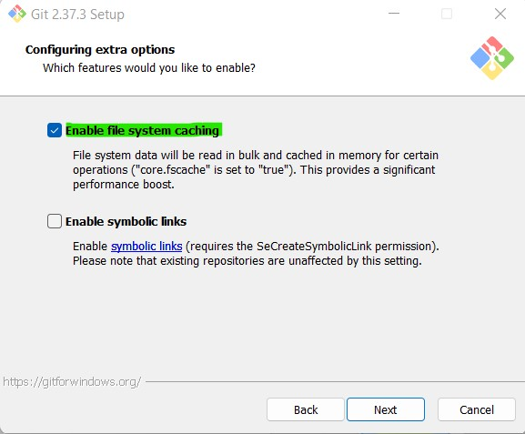 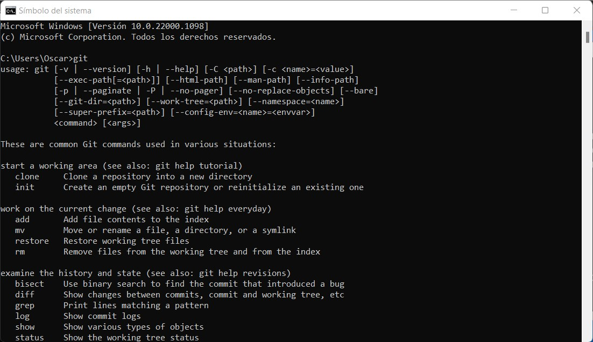
Para confirmar de que git este instalado correctamente
 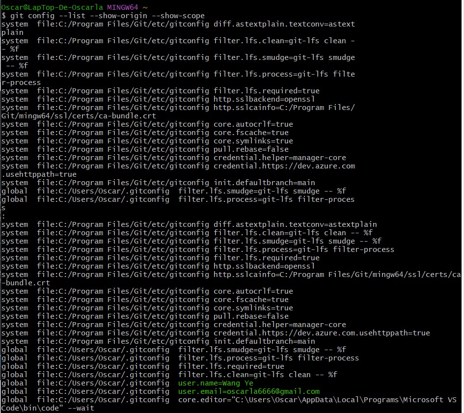
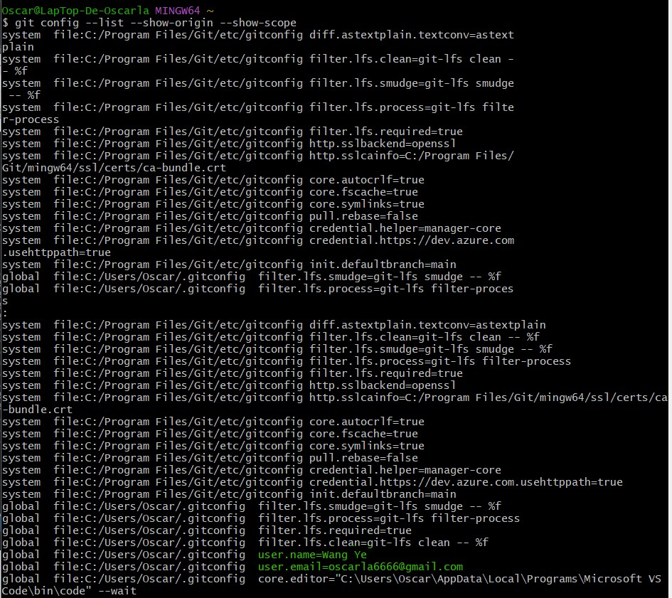
git -init Para señalar la carpeta como repositorio
git add .
git commit -m “Initial commit” es hacer comentario sobre la actualizacion
git remote add origin https://github.com/Oscarla0/Entrega_Practicas_AccDatos_Wang_Ye_Tema1.git
git push -u original main es añadirlo al repositorio main , si hay un comentario se pondra encima para asignar esta accion de actualizacion etc.